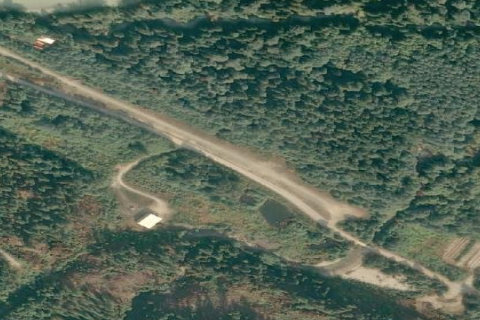

Tipella, BC – Canada
CBB7

Aerial imagery source: Esri, Vantor, Earthstar Geographics, and the GIS User Community
View original source (Shortfield) →
| Identifier | CBB7 |
|---|---|
| Coordinates | 49.742038, -122.160577 |
Notes
[shortfield] Location Overview Tipella Airport sits near the head of Harrison Lake in southwestern British Columbia, serving the remote community of Port Douglas and nearby logging camps. The airstrip carries the TC LID code CBB7, sits at roughly 55 feet elevation, and features a single gravel runway oriented 11/29 at approximately 2,300 feet in length. It lies about 110 nautical miles from Vancouver, reachable only via long stretches of forest service road or by air. Camping & Recreation There are no formal camping facilities at the airstrip itself. The surrounding area offers exceptional backcountry recreation — Harrison Lake provides fishing, kayaking, and boating opportunities, while the dense mountain terrain is popular for hiking and wildlife watching. The western shore route along Harrison Lake is also known for fossil hunting, with bivalves and ammonites dating to the Middle Jurassic period found near the roadside in places. Chehalis Lake, further south along the forest service road, is a popular camping destination in the region. Notes & Warnings The airstrip is privately operated — currently by Innergex Renewable Energy — and is not a public use facility. No navigational aids are present in the vicinity, and the airport does not publish a METAR; the nearest weather reporting station is Hope Airport, approximately 34 nautical miles away. Pilots should anticipate mountain flying conditions with potential for rapidly changing weather, valley turbulence, and terrain challenges on all sides. The tight approach environment, surrounded by tall trees and high terrain, demands careful pre-flight planning and conservative minimums. Always confirm access and landing permission with the operator before flying in. History The locality was historically known as Tipella City — an early 20th-century real estate venture that never came to fruition, though the placename remained on maps and was eventually adopted by the airstrip. Nearby Port Douglas was established in 1858 under Governor Douglas and for a brief period was a booming gateway town, with a population in the thousands during its heyday and the origin of several of BC's first freighting companies. The area transitioned into logging activity over the following decades, reaching its economic peak in the 1950s, when the Spring Creek logging camp near Tipella was active. By 1970, a logging company had leveled the remnants of Port Douglas entirely, and today little remains at either site beyond the airstrip. More recently, the area has seen a new industrial chapter: Innergex acquired run-of-river hydroelectric facilities in the region, including the Tipella Creek Project, which uses the hydraulic resources of the lower reaches of Tipella Creek near Harrison Lake.